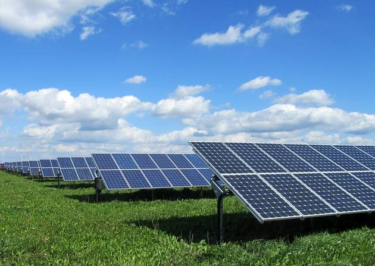
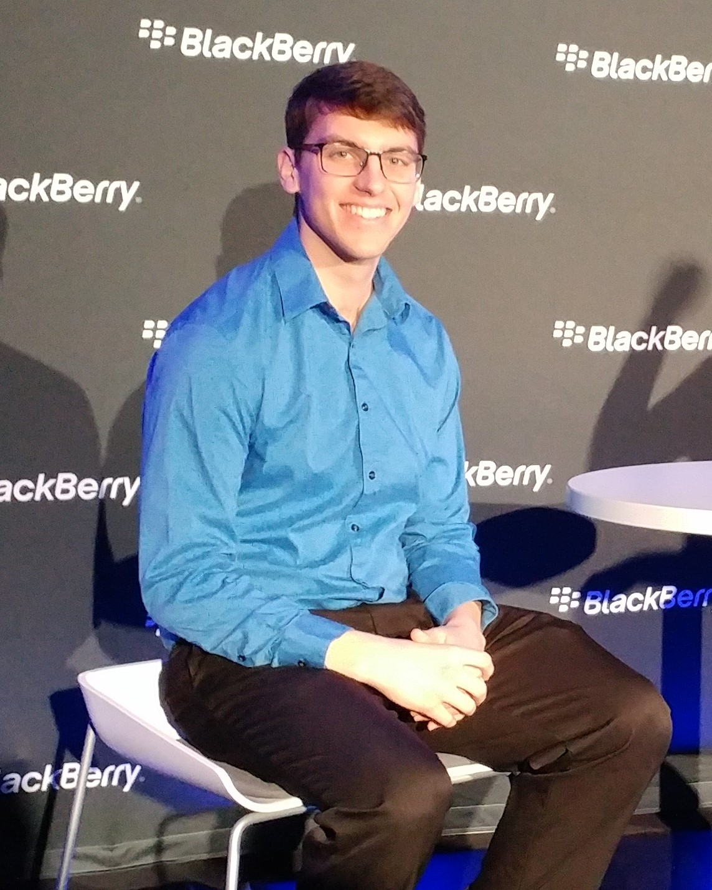
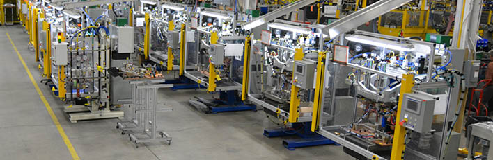

My name is Eric Parker and I’m a third-year Electrical Engineering student at the University of Windsor. This website serves as my online portfolio to demonstrate some of the projects I’ve worked on and share details about some of the issues I’ve overcome along the way.
Through a unique combination of university-funded research projects and co-op opportunities, I have gained experience in a number of different technical fields including software engineering (web development and embedded systems), hardware design (digital and analog), and automotive, power, and consulting engineering. Please feel free to contact me if you have any questions or you would like to hear more about my experience.
The Energy Harvesting Exercise Machine is an innovative design that transforms old exercise equipment into portable renewable energy resources.
It accomplishes this by equipping an old stationary bike with an alternator and battery salvaged from scrap vehicles.
Combine this with a simple power inverter circuit and you have a portable renewable energy source capable of powering virtually any mid-size household electronic device, from toasters to televisions!
To learn more about the project, take a look at the full report by clicking on the button below.
The report covers everything from the design process and market competitors to design details and prototype results.
This project was completed with the help of a talented colleague Sean Santarossa. He is a fellow University of Windsor Electrical Engineering student and a good friend of mine.
The Pre-Shower Water Heater is a water conservation system designed to drastically reduce annual freshwater consumption,
awarded first prize in an Institute of Electrical and Electronics Engineers (IEEE) circuit design competition out of over 50 teams.
The circuit’s motivation came from the fact that most people run the water in their shower for a minute or so before stepping in to the shower to allow for the water to heat up to a comfortable temperature.
This practice is extremely wasteful, and amounts to approximately 1.05 trillion liters of water wasted annually in the United States and Canada alone (see report for sources).
Thus, this circuit eliminates that problem by introducing a way to provide people with water at a comfortable temperature immediately out of the shower or sink tap without any delay,
allowing individuals to enter the shower or wash their hands comfortably the instant they turn the water on!
It accomplishes this by storing most of the cold water remaining in the pipes running between your water heater and shower head
(which is the cold water that needs to be flushed out before hot water flows through the shower head) in a heated basin, and allowing the user to heat up the water to any desired temperature with the turn of a dial.
The user turns a dial and waits for the user interface to indicate that the water is heated, instead of running the water and waiting for it to get hot.
To learn more about the project, take a look at the full report by clicking on the button below. The report covers everything from the design process and market competitors to design details and prototype results.
This project was completed with the help of a talented colleague Sean Santarossa. He is a fellow University of Windsor Electrical Engineering student and a good friend of mine.
My first co-op job was with Fiat Chrysler Automobiles. I worked at the Windsor Assembly Plant (WAP) which is a world-class manufacturing facility located in Windsor, Ontario.
This is the place where every single Dodge Grand Caravan, Chrysler Pacifica, and Chrysler Town and Country vehicle in the world is manufactured.
The manufacturing facility is over 4.4 million square feet, employs over 5,800 people, and a newly completed vehicle rolls off the line every 42 seconds.
My job was with the resident engineering department whose general role is to ensure vehicle quality by investigating, root causing, and resolving customer warranty claims as well as quality issues within the plant.
This opportunity was both very exciting and very demanding, as I often worked 70+ hour work weeks in order to ensure the success of my engineering projects;
this is common practice for resident engineers in world-class manufacturing facilities.
My time spent here was particularly valuable because the plant had just relaunched after a 14-week shutdown.
$2 billion were invested to retool the facility in order to allow for the manufacturing of the all-new Chrysler Pacifica minivan.
With this relaunch, thousands of unusual problems arose that my team and I had to solve in order to get the plant running as required.
I also had the opportunity to assist with the design of various electrical components within the prototype minivans and participate in prototype builds, documenting and resolving issues as they occurred.
Through this position, I improved my leadership and teamwork skills through the management of many projects that involved working with large teams of engineers and assembly-line operators to root cause and resolve manufacturing issues.
The position instilled in me a fast-paced, independent work ethic, and taught me how to ensure success when given substantial responsibility within a project.
To learn more about specific projects that I worked on in detail, read the full work term report by clicking on the button below.
Here's a summary of the things I did while working for FCA:
Managed projects that implemented corrective actions within the Windsor Assembly Plant resulting in over $500,000 in annual savings for the company
Collaborated with large teams of engineers and assembly-line operators to root cause and resolve manufacturing issues
Created a series of databases currently used to provide engineers with real time data necessary to solve problems quickly
Presented at meetings to company executives
Junior Software Developer
Essex Energy Corporation, Oldcastle, ON

May 2016 - August 2016
My second co-op job was with Essex Energy Corporation. They are an engineering consulting firm providing expertise in the areas of energy management and conservation as well as distributed generation.
I worked for the software development division responsible for producing engineering analysis software for use by power engineers to track asset information and perform engineering analysis based on real-time data.
This job provided me with the opportunity to utilize both my software development skills and electrical engineering background, as I contributed to the development of software applications in addition to engineering consulting projects.
The vast majority of software development projects I contributed to were web-based engineering tools designed for use by electrical engineers.
Such projects included the development of data-driven web applications used by engineering teams to schedule and manage inspections of power distribution assets,
and graphical user interface (GUI) applications designed to automate tedious engineering tasks by interfacing between programs including Microsoft Excel, web browsers, operating systems, and other GUI applications.
The web-based engineering applications I worked on were full-stack development projects that required me to implement both backend business logic by writing server-side C# code leveraging SQL queries to create REST APIs,
as well as consume these APIs and implement the user interfaces in the form of web applications using client-side technologies and frameworks including AngularJS, HTML, CSS, and JavaScript.
The GUI applications developed for process automation were primarily developed using Python leveraging powerful third-party libraries including openpyxl, pyautogui, beautifulsoup4, and PyPDF2.
In addition to software development projects, I also had the opportunity to contribute to the consulting engineering team at Essex Energy.
Such projects included assessing green energy initiatives, performing engineering analysis on proposed distributed generation projects,
and improved modelling of the local electrical grid using software programs including ArcGIS and SmartMAP.
Such projects required me to apply my electrical engineering background in order to provide customers with expected electrical conditions directly resulting from such initiatives.
To learn more about specific projects that I worked on in detail, read the full work term report by clicking on the button below.
Here's a summary of the things I did while working for Essex Energy Corporation:
Developed data-driven web applications used by engineering teams to schedule and manage inspections of power distribution assets
Implemented and tested dynamic webpages using web technologies and frameworks including AngularJS, HTML, CSS, AJAX, JSON, and AngularUI in an agile software development environment
Enabled web applications to interact with SQL databases by creating Windows Communication Foundation (WCF) REST API web services using Microsoft's ASP.NET framework
Modified and maintained backend business logic by writing server-side C# code and designing and implementing SQL queries
Wrote Python scripts and GUI applications that automated tedious tasks by interfacing between Python and other programs including MS Excel, web browsers, operating systems, and other GUI applications
Web Software Developer
BlackBerry, Waterloo, ON

January 2017 - April 2017
My third co-op was with BlackBerry at the world headquarters in Waterloo, Ontario. The experience was particularly enlightening because the company was nearing the competition of a corporate pivot from handheld mobile devices to software security.
I worked for the Portals and HR team who is responsible for managing and delivering a number of web-based customer relationship management (CRM) applications that handle everything from sales transactions to online customer service.
The team’s diverse role provided me with the opportunity to get involved in a broad range of projects requiring me to leverage both my technical knowledge and strong leadership abilities.
Most of the software development projects I contributed to were part of “Project Unite”, a company initiative to merge all BlackBerry CRM applications with its subsidiaries into a single system.
Through BlackBerry’s transition toward establishing itself as an industry leader in cyber security, they have acquired a number of companies with similar ambitions including AtHoc, Good Technology, and Encription
Prior to the acquisitions, each company had their own CRM applications and backend systems, and it was the goal of Project Unite to merge all customer and sales related software into a single instance.
I contributed to the project by implementing web applications and backend API methods primarily related to customer cases and sales transactions. Such projects required sophisticated knowledge of the Salesforce platform and associated APIs in addition to single sign-on (SSO)/security assertion markup language (SAML) understanding in order to integrate the applications with existing large enterprise software suites.
Perhaps my most impactful work at BlackBerry came through the opportunity to lead project “DNC” (Do Not Contact), which was an initiative with the goals of decommissioning an Oracle database cluster housing the contact information for people who had unsubscribed from BlackBerry marketing emails and revitalize the unsubscribe experience for customers.
The project was driven by two major benefits: the database contracts with Oracle (worth upwards of $4,000,000 annually) were concluding during my co-op term and new Canada Anti-Spam Legislation (CASL) was set to come into force on July 1, 2017.
Leading this project required well-orchestrated contributions from many different divisions of the company including migration of existing data to the new target database cluster, development of new web services that access and update the new database, deactivation of old APIs and web applications associated with the old database, and knowledge transfer/compliance within BlackBerry’s marketing team.
With such significant potential legal repercussions if the project was unsuccessful, it was vital that all involved organizations performed their duties with excellent execution.
In addition to managing the project and coordinating the actions of those involved, I contributed technically via the creation of a new DNC API which served as the primary interface between the new database cluster and all associated web applications, and implemented BlackBerry’s new unsubscribe form.
The project was very successful as all necessary objectives were delivered prior to the termination date of BlackBerry’s contract with Oracle thus allowing the company transition to the new platform without having to renew the contract, resulting in over $4,000,000 in annual savings for the company.
As BlackBerry continues to establish itself as an industry leader in cyber security, it is necessary that all technical personnel are aware of current hacking techniques and how to combat them.
Naturally, this was the topic I chose to write about in my work term report. Click on the button below to read the full work term report entitled “Web Security Best Practices”.
Here's a summary of the things I did while working for BlackBerry:
Worked as a full-stack developer designing and implementing REST APIs and web applications as components of large enterprise software suites
Led data integration and customer relationship management (CRM) projects resulting in over $4M in annual savings for the company
Designed and implemented backend scripts to automate enterprise data integration operations
Performed LAMP stack server configuration modifications as required
Worked with project managers and IT operations to schedule and ensure successful software deployments
Product Development Co-op
CenterLine, Windsor, ON

September 2017 - December 2017
My final co-op position is with CenterLine at the world headquarters located in Windsor, Ontario.
I work as a Product Development Electrical Engineering Co-op Student leveraging my skills in embedded programming, microcontroller design, and controls engineering to assist the product development team with various aspects of the product development lifecycle.
Currently, I don’t have much to say about my work here since it is ongoing.
Check back with this website sometime after I have completed this co-op term to find out more about the projects I contributed to while working here!